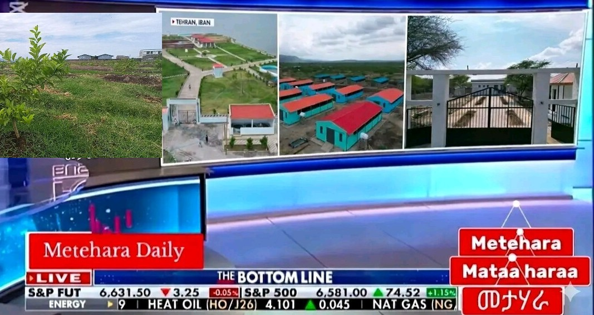

አበይት ዜናዎች (አማርኛ)

አቶ አዲሱ ዋቆ ያስመዘገቧቸው የልማት ስራዎች
የመተሃራ ከተማ ከንቲባ አቶ አዲሱ ዋቆ የከተማዋን ገጽታ ከመቀየር ባለፈ ለነዋሪዎች ምቾት ትልቅ አስተዋጽኦ እያበረከቱ ነው። የቆሻሻ ክምር የነበረውን የመተሃራ ሃይቅ ዳርቻ ወደ ውብ የመዝናኛ ስፍራነት ቀይረዋል።
ዘጋቢ፡ ሳምሶን ተስፋዬ
💧 የንፁህ መጠጥ ውሃ ፕሮጀክት 90% ደረሰ
ከ1.4 ቢቢሊዮን ብር በላይ ወጪ የሚከናወነው ይህ ፕሮጀክት የከተማዋን የውሃ ሽፋን 100% ያደርሳል። ለቀጣዮቹ 50 ዓመታት አስተማማኝ አገልግሎት መስጠት የሚችል አቅም አለው።
🍊 የብርቱካን እርሻ ሳይንሳዊ ክብካቤ
በበሰቃ ሃይቅ ዳርቻ ላይ አዲስ የከተማ ግብርና ተሞክሮን ወደ ተግባር ተቀይሯል። የዛፎች የመግረዝ (Pruning) ስራ በሳይንሳዊ መንገድ እየተከናወነ ይገኛል።
Odeeffannoo (Afaan Oromoo)
Hojiilee Misoomaa Kantiibaa Obbo Addisuu Waaqoo
Qarqarri haroo Mataharaa kanaan dura iddoo xuraawaa ture gara bakka bashannanaa bareedaatti jijjiirameera. Akkasumas projeektiin bishaan dhugaatii qulqulluu dhibbeentaa 90 irra gaheera.
Gabaasaan: Saamsoon Tasfaayee
Metehara News (English)
City Transformation & Water Infrastructure
Mayor Addisu Wako has transformed the lake shores into parks. The 1.4 billion Birr water project is now 90% complete, ensuring safe water for the next 50 years.